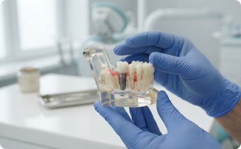
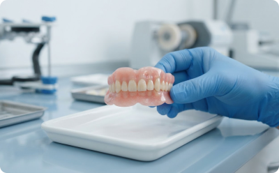
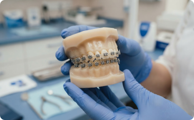
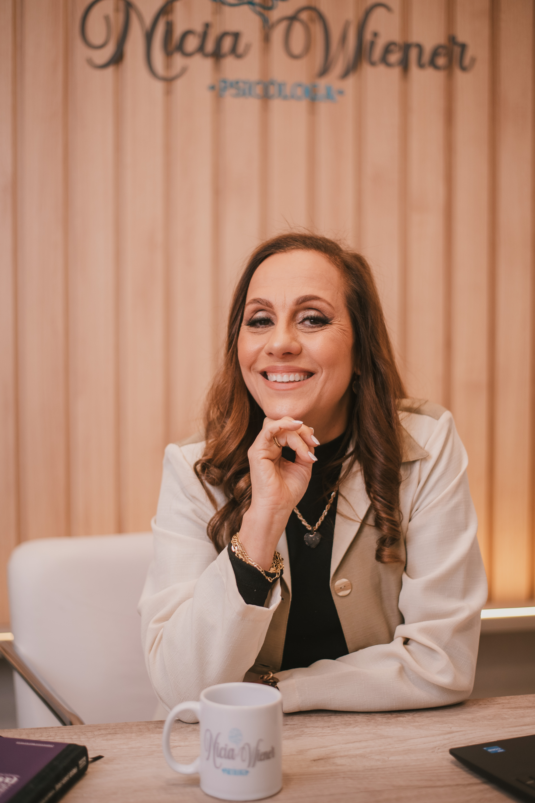
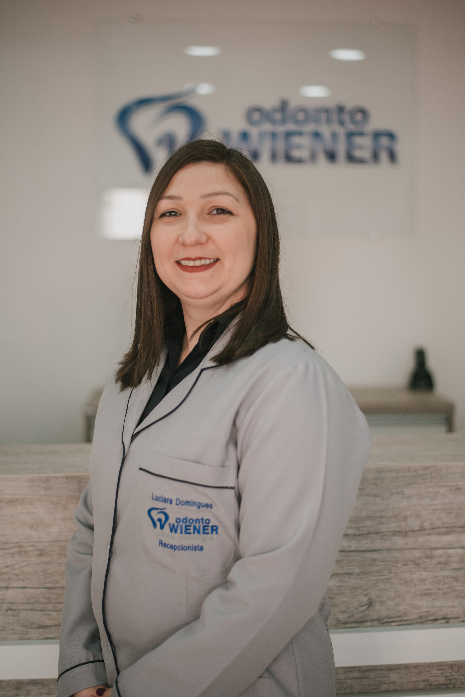
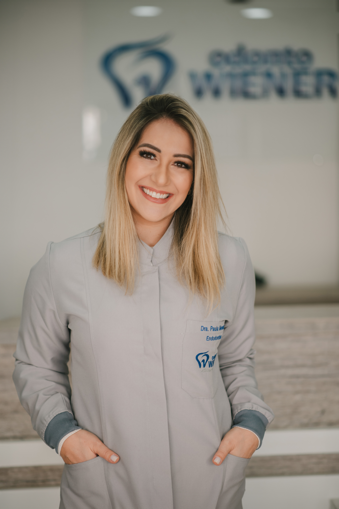
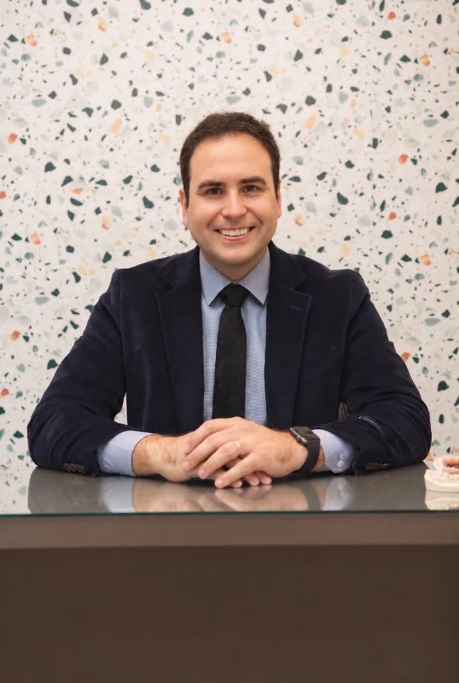

01 Implantes
Conheça as opções de implantes dentários e converse com a equipe sobre a avaliação.
Conversar sobre o tratamento ↗15 ANOS DE HISTÓRIA EM PELOTAS
Uma clínica familiar em Pelotas. Conheça nossa história, nossa equipe e os cuidados que oferecemos.
Agendar consulta Conheça os tratamentos ↓.jpeg)
TRATAMENTOS
Implantes, próteses e ortodontia. Converse com a equipe para entender as opções de cuidado.

Conheça as opções de implantes dentários e converse com a equipe sobre a avaliação.
Conversar sobre o tratamento ↗
Conheça as opções de próteses dentárias e converse com a equipe sobre a avaliação.
Conversar sobre o tratamento ↗
Conheça as opções de cuidados ortodônticos e converse com a equipe sobre a avaliação.
Conversar sobre o tratamento ↗Toque ou use Espaço para pausar ou retomar os vídeos. Use as setas do teclado ou deslize para mudar de ambiente. Home vai ao primeiro e End ao último. Com movimento reduzido, as imagens permanecem estáticas.
NOSSA HISTÓRIA
Conheça a Odonto Wiener, uma clínica familiar em Pelotas, e as pessoas que fazem parte da nossa história.
QUEM FAZ PARTE
Conheça quem faz parte da história da Odonto Wiener.
Ortodontista e Clínico Geral
CRO/RS 12980

Psicologia
CRP/RS 07/41467

Recepcionista

Endodontista
CRO/RS 26040

Bucomaxilofacial
CRO/RS 25036
CONTATO E LOCALIZAÇÃO
Fale com a equipe para tirar dúvidas e consultar os horários de atendimento.
Agendar consultaRua Quinze de Novembro, 707, Pelotas, Rio Grande do Sul
MAPA DA LOCALIZAÇÃO
Abrir localização no Google Maps ↗Se o mapa não carregar, use o link acima para consultar o endereço.